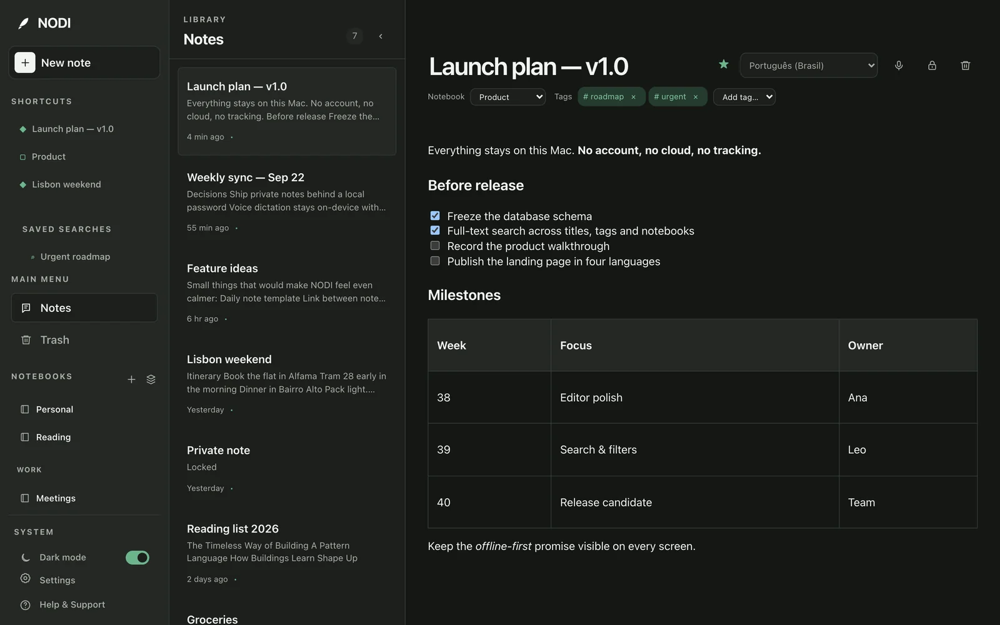

Editor
A writing surface that stays out of the way
Headings, bullet and numbered lists, checklists, tables, links and highlights. Every change saves automatically, and if a save ever fails NODI keeps your text and lets you retry.
